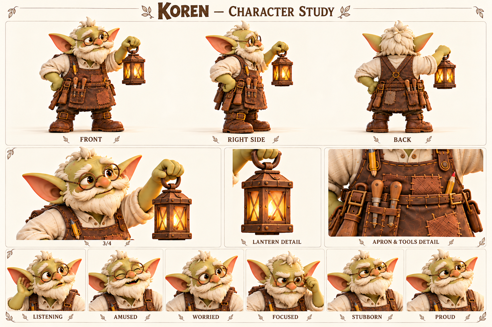

Чего хочет
Чтобы вещи служили долго и его знания оставались полезными.
Помнит, как сделана каждая вещь, и учится доверять тем, кто сделает следующую.
Пожилой ремесленник деревни; наставник, который тоже учится отпускать привычный порядок.

Кремовые усы веером; белый хохолок; круглые очки; рыжевато-коричневый фартук; фонарь.
Палитра: Крем / ржавый / янтарь.
Корень большую часть жизни чинил то, что связывает деревню: дверные петли, перила, фонари, колёса тележек. Он узнаёт свои старые работы по едва заметной зарубке и может рассказать, почему выбрал именно эту доску. Для него ремонт — продолжение знакомства с хозяином вещи. Поэтому выброшенная сломанная ручка иногда расстраивает его сильнее, чем большая новая работа радует.
Он привык отвечать за результат и незаметно превратился в человека, который поправляет чужую руку над инструментом прежде, чем ученик успел попробовать. Тиш приносит ему задачи слишком поздно, Пип задаёт слишком много вопросов, а Фика рисует конструкцию не так, как он объяснял. Все трое его утомляют и радуют. С Шалом Корень спорит о старых мостках: один помнит крепёж, другой — воду под ним.
Будущая история может потребовать приспособить застёжку для каменной руки Бума. Старый привычный способ не подойдёт, и Корню придётся сначала спросить, что Буму удобно. Успехом станет не чудесное исцеление, а совместно найденная простая вещь. В конце Корень оставит на столе инструмент для следующего мастера и удержится от последней поправки.
Чтобы вещи служили долго и его знания оставались полезными.
Спрашивать о потребности и доверять чужому способу работы.
Стать ненужным или увидеть, как важное мастерство исчезает.
Объясняет слишком долго и исправляет прежде, чем его попросили.
Практическая память, терпение, точные руки и уважение к небольшим вещам.
Прекрасно чинит старое, но не сразу замечает, что новому нужна другая форма.
Темп и ритм. Спокойный, чуть обстоятельный; умеет сократить объяснение, когда замечает усталость.
Слова и построение фразы. Примерим, держится, послужит, ровно, попробуй сам. Ремесленные сравнения по делу.
Юмор. Тёплое ворчание на вещи и собственные привычки, а не на молодёжь.
Под давлением. Уходит в технические подробности; смягчается, когда задаёт конкретный вопрос.
Как проявляет заботу. Делает удобнее и учится сначала спрашивать разрешение помочь.
Чего избегать. Не всезнающий мудрец, не ходячая мораль, не магический целитель любой проблемы.
| Ситуация | Реплика или действие |
|---|---|
| Работа | Починить можно. Сначала скажи, как ты этим пользуешься. |
| С Бумом | Не руку под застёжку. Застёжку под руку. |
| С детьми | Вот инструмент. Попробуй. Я подержу доску. |
| Ошибка | Старый способ. Для этой задачи — не лучший. |
| Юмор | Очки искал. Через очки. Бывает. |
| Передача | Теперь твоя очередь. Я не буду поправлять. Постараюсь. |
| Подпись на листе | Состояние | Актёрская задача |
|---|---|---|
| LISTENING | Слушание | Смотрит поверх очков, голова чуть вперёд. |
| AMUSED | Веселье | Усы поднимаются, глаза улыбаются. |
| WORRIED | Беспокойство | Брови вверх, рука замирает над инструментом. |
| FOCUSED | Сосредоточенность | Очки поправлены, взгляд точный. |
| STUBBORN | Упрямство | Подбородок вверх, губы скрыты усами, плечи собраны. |
| PROUD | Гордость | Тихая улыбка, взгляд направлен на чужую работу. |
Движение: Экономные точные движения, привычка проверять соединение пальцем. Не трясётся постоянно; возраст выражен темпом и посадкой.
| План | Что показывает |
|---|---|
| Общий план спереди | Силуэт, лицо, одежда, положение ступней; без потери главных признаков. |
| Боковой ракурс | Глубина фигуры, профиль лица, предметы на ремнях и посадка одежды. |
| Вид со спины | Причёска, крепления, рюкзак либо панцирь; признаки не зеркалятся. |
| Средний план в три четверти | Лицо вместе с характерным жестом и позой корпуса. |
| Крупные детали | Материал и узнаваемые предметы; особенности лица, уха, руки или панциря. |
| Шесть эмоциональных портретов | Взгляд, брови, рот и положение головы; у существ также усики, крылья и поза. |
Совместная работа над удобной застёжкой для Бума и первое самостоятельное изделие племянников.